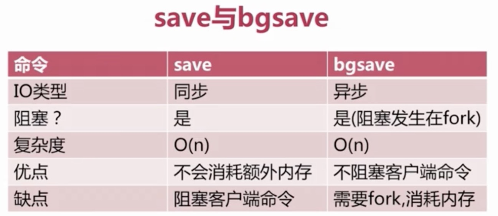
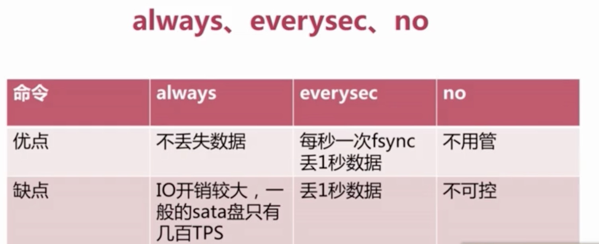
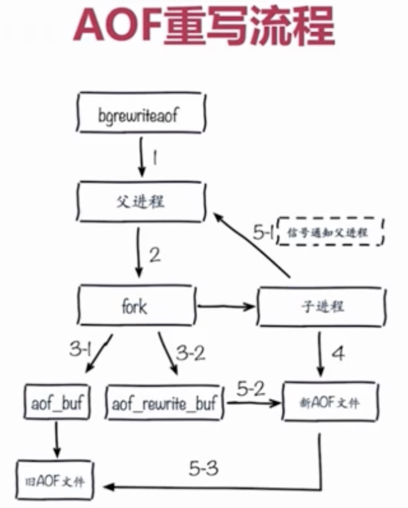
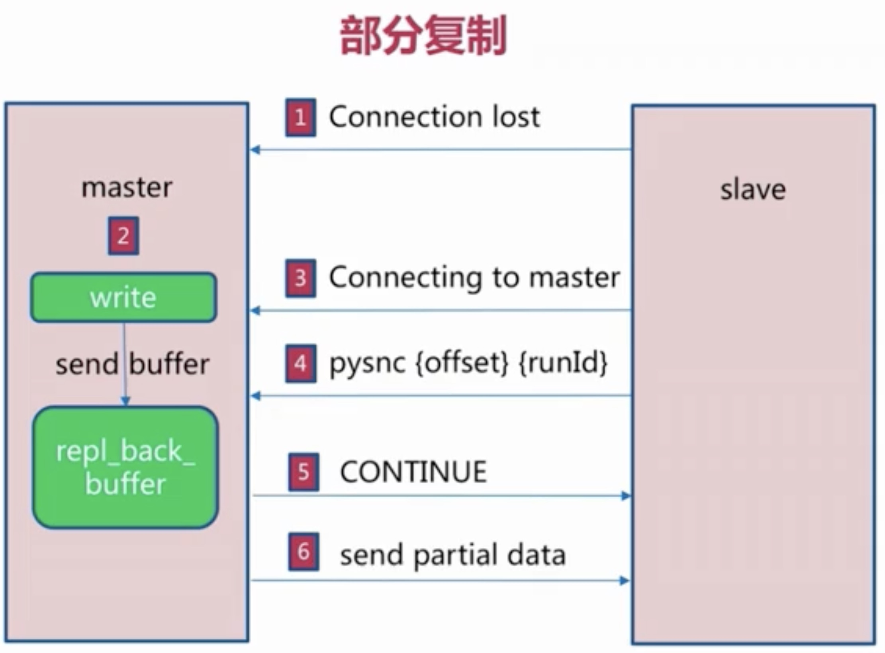
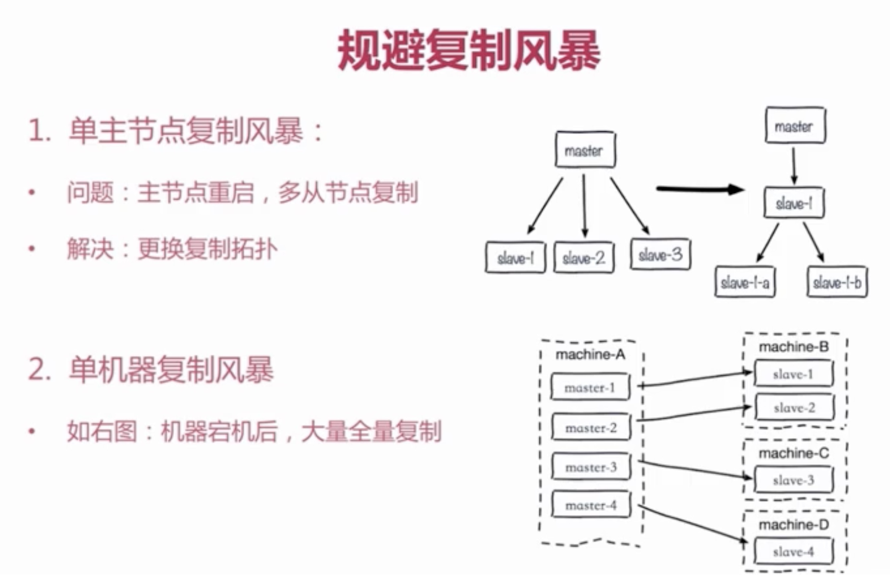

本文记录了在Mac上的Docker环境下安装部署Redis主从复制集群并挂载外部配置和数据的操作步骤，Redis 的主从数据是异步同步的，所以分布式的 Redis 系统并不满足「一致性」要求。当客户端在 Redis 的主节点修改了数据后，立即返回，即使在主从网络断开的情况下，主节点依旧可以正常对外提供修改服务，所以 Redis 满足「可用性」。
Redis 保证「最终一致性」，从节点会努力追赶主节点，最终从节点的状态会和主节点的状态将保持一致。如果网络断开了，主从节点的数据将会出现大量不一致，一旦网络恢复，从节点会采用多种策略努力追赶上落后的数据，继续尽力保持和主节点一致。
关注文末的公众号，后台私信获取完整的配置文件。
Redis主从复制配置
1
2
3
4
5
6
7
8
| port port # 设置主从节点的端口
pid /var/run/redis-${port}.pid # 通过端口区分主从节点进程
logfile "${port}.log" # 通过端口区分主从节点日志文件
dbfilename dump-${port}.rdb # 通过端口区分主从节点rdb文件
appendfilename "appendonly-${port}.aof" # 通过端口区分主从节点aof文件
slaveof ip port # 从节点附属于主节点的ip和端口
masterauth password # 如果主节点设置了密码认证这时候需要授权从节点密码
slave-read-only yes # 从节点只读
|
1
2
3
4
5
6
7
8
9
10
11
12
13
14
15
16
17
18
19
20
21
| # 指定Redis配置文件目录来启动Redis容器
# 创建redis_master容器服务
~ docker run -p 6379:6379 --privileged=true --name redis_master \
-v /Users/hancaihaoyun/docker/redis/conf:/etc/redis/conf \
-v /Users/hancaihaoyun/docker/redis/data:/data \
-d redis redis-server /etc/redis/conf/redis_master.conf
# 创建redis_slave_1容器服务
~ docker run -p 6380:6380 --privileged=true --name redis_slave_1 \
--link redis_master:master \
-v /Users/hancaihaoyun/docker/redis/conf:/etc/redis/conf \
-v /Users/hancaihaoyun/docker/redis/data:/data \
-d redis redis-server /etc/redis/conf/redis_slave_1.conf
# 创建redis_slave_2容器服务
~ docker run -p 6381:6381 --privileged=true --name redis_slave_2 \
--link redis_master:master \
-v /Users/hancaihaoyun/docker/redis/conf:/etc/redis/conf \
-v /Users/hancaihaoyun/docker/redis/data:/data \
-d redis redis-server /etc/redis/conf/redis_slave_2.conf
|
设置完主从复制之后，通过docker ps -a查看各个容器的运行状况
然后查看主节点的log，tail -f 6379.log可以看到下面的输出日志
1
2
3
4
5
6
7
8
9
10
11
12
13
14
15
16
17
18
19
20
| 1:S 20 Apr 2020 05:47:26.682 * Ready to accept connections
1:S 20 Apr 2020 05:47:26.684 * Connecting to MASTER master:6379
1:S 20 Apr 2020 05:47:26.687 * MASTER <-> REPLICA sync started
1:S 20 Apr 2020 05:47:26.689 * Non blocking connect for SYNC fired the event.
1:S 20 Apr 2020 05:47:26.691 * Master replied to PING, replication can continue...
1:S 20 Apr 2020 05:47:26.693 * Partial resynchronization not possible (no cached master)
1:S 20 Apr 2020 05:47:26.705 * Full resync from master: 9cfc5fe9ae83702ee4c1382ddc9298d4bea9763a:0
1:S 20 Apr 2020 05:47:26.781 * MASTER <-> REPLICA sync: receiving 199 bytes from master
1:S 20 Apr 2020 05:47:26.785 * MASTER <-> REPLICA sync: Flushing old data
1:S 20 Apr 2020 05:47:26.786 * MASTER <-> REPLICA sync: Loading DB in memory
1:S 20 Apr 2020 05:47:26.790 * MASTER <-> REPLICA sync: Finished with success
1:S 20 Apr 2020 05:47:26.793 * Background append only file rewriting started by pid 18
1:S 20 Apr 2020 05:47:26.823 * AOF rewrite child asks to stop sending diffs.
18:C 20 Apr 2020 05:47:26.826 * Parent agreed to stop sending diffs. Finalizing AOF...
18:C 20 Apr 2020 05:47:26.828 * Concatenating 0.00 MB of AOF diff received from parent.
18:C 20 Apr 2020 05:47:26.831 * SYNC append only file rewrite performed
18:C 20 Apr 2020 05:47:26.833 * AOF rewrite: 0 MB of memory used by copy-on-write
1:S 20 Apr 2020 05:47:26.900 * Background AOF rewrite terminated with success
1:S 20 Apr 2020 05:47:26.905 * Residual parent diff successfully flushed to the rewritten AOF (0.00 MB)
1:S 20 Apr 2020 05:47:26.909 * Background AOF rewrite finished successfully
|
鉴于在同一主机下搭建redis主从集群，只需要完成容器互联来实现容器之间的通信即可，这里采用 docker run命令的–-link选项来建立容器之间的连接。这里介绍一下–link选项的用法，通过–link选项能够进行容器间的安全的交互通信，使用的格式为：name:alias，可在一个docker run命令中重复使用该参数。使用实例如下：
1
| docker run --link redis_master:master --name redis_slave_1 redis bash
|
上例中在redis镜像上启动一个容器，并命名为redis_slave_1，同时将新启动的redis_slave_1容器连接到名为master的容器上。在使用–link选项时，连接通过容器名来确定容器。
通过–link选项来建立容器之间的连接，不但可以避免容器的IP和端口暴露到外网导致的安全问题，还可以防止容器自重启后IP地址发生变化导致的访问的失效，它的原理类似于DNS服务器的与域名和IP地址的映射。当容器的IP地址发生变化时，Docker自动维护映射关系中的IP地址。
如果在配置完毕后启动容器，运行info命令查看到上述信息中connected_slaves的值为0，测试主从复制也没有成功，需要将所有配置文件中的bind 127.0.0.1修改为bind 0.0.0.0，或者直接注释掉bind 127.0.0.1也可以。
1
2
3
4
5
| slaveof no one # 在redis_slave_1节点的机器上执行取消主从同步
info replication # 在redis_slave_1节点的机器上查看同步配置信息，发现已经从slave转为master
在redis_master节点的机器上查看同步配置信息，发现connected_slaves:0
slaveof master 6379 # 再次在redis_slave_1节点的机器上执行主从同步
这时候slave节点会清空之前保存的数据，然后从master拉取最新的数据进行全量复制
|
补充材料
rdb持久化配置
1
2
3
4
5
6
7
8
| #save 900 1
#save 300 10
#save 60 10000
stop-writes-on-bgsave-error yes
rdbcompression yes
rdbchecksum yes
dbfilename dump-${port}.rdb
dir /bigdiskpath
|
通过save和bgsave生成rdb文件

触发机制-不容忽略方式
- 全量复制
- debug reload
- shutdown
aof持久化配置
1
2
3
4
5
6
7
| appendonly yes
appendfilename "appendonly-${port}.aof"
appendfsync everysec
dir /bigdiskpath
no-appendfsync-on-rewrite yes
auto-aof-rewrite-percentage 100
auto-aof-rewrite-min-size 64mb
|
生成aof文件的三种策略对比

aof文件会随着时间推移不断变大，当满足一定条件的情况下，redis为了减小aof文件的大小会进行aof重写

全量复制开销
- bgsave时间
- rdb文件网络传输时间
- 从节点清空数据时间
- 从节点加载rdb文件的时间
- 可能的aof重写时间
部分复制

改善fork
- 优先使用物理机或者高效支持fork操作的虚拟化技术
- 控制Redis实例最大可用内容：maxmemory
- 合理配置Linux内存分配策略：vm.overcommit_memory=1
- 降低fork频率：例如放宽aof重写自动触发时机，不必要的全量复制
改善子进程开销和优化
-
CPU
开销：rdb和aof文件生成，属于CPU密集型
优化：不做CPU绑定，不和CPU密集型部署
-
内存
开销：fork内存开销，copy-on-write
优化：echo never > /sys/kernel/mm/transparent_hugepage/enabled
-
磁盘
不要和高硬盘负载服务部署在一起：存储服务、消息队列等
no-appendfsync-on-rewrite = yes
根据写入量决定磁盘类型：例如ssd
单机多实例持久化文件目录可以考虑分盘
-
读写分离可能遇到的问题
优点是读流量可以分摊到从节点
复制数据延迟
读到过期数据
从节点故障
-
配置不一致
例如maxmemory不一致：丢失数据
列入数据结构优化参数(例如hash:max-ziplist-entries):内存不一致
-
规避全量复制
第一次全量复制不可避免，在小主节点上执行，错峰执行
节点运行id不匹配，主节点重启则运行id变化
复制积压缓存区不足，网络中断，部分复制无法满足，增大复制缓冲区配置rel_backlog_size，增强网络
-
规避复制风暴

关注【憨才好运】微信公众号，了解更多精彩内容⬇️⬇️⬇️